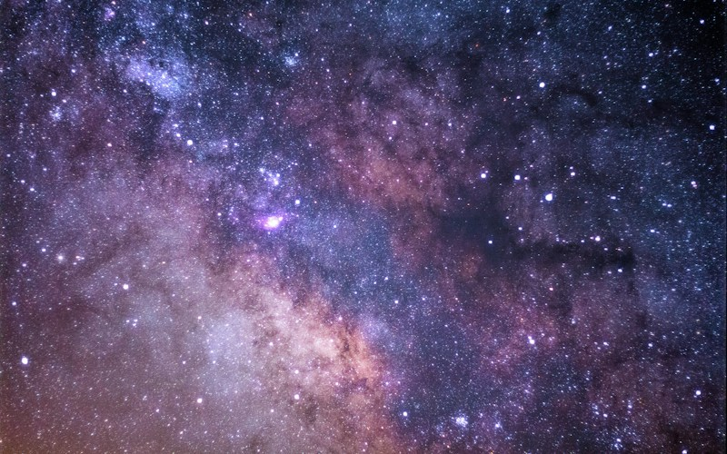

The Big Bang Theory

The Big Bang is the leading scientific model for the origin and evolution of the universe. Roughly 13.8 billion years ago, the universe began in an extremely hot, dense state and has been expanding and cooling ever since.
Key Ideas
- Space itself expands; galaxies recede from one another (Hubble–Lemaître law).
- In the first few minutes, protons and neutrons fused into light nuclei (hydrogen, helium, lithium) — Big Bang nucleosynthesis.
- About 380,000 years later, electrons combined with nuclei to form neutral atoms. The universe became transparent, releasing the cosmic microwave background (CMB) we still detect today.
- Gravity later pulled matter into stars, galaxies, and the large-scale structure we observe.
Supporting Evidence
- Observed expansion of the universe
- Cosmic microwave background radiation
- Abundances of the lightest chemical elements
- Ages of the oldest stars and galaxies consistent with ~13.8 billion years
The modern picture is often called ΛCDM (Lambda Cold Dark Matter): ordinary matter, cold dark matter, and dark energy (Λ) that drives accelerated expansion.